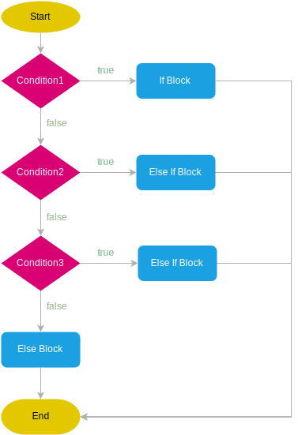

Introdução ao Java
A linguagem Java foi criada em 1995 pela equipe da Sun Microsystems, em uma equipe liderada por James Gosling. Seu objetivo inicial era desenvolver aplicações portáteis para dispositivos eletrônicos, sua principal inovação foi a portabilidade, o que rapidamente a tornou uma das linguagens mais populares para desenvolvimento de sistemas corporativos, web e móveis.
Em 2009, a Oracle Corporation adquiriu a Sun Microsystems, tornando-se a principal mantenedora da linguagem e de seu ecossistema.
Slogan histórico: "Write once, run anywhere" — “Escreva uma vez, execute em qualquer lugar”.
Funcionamento do Java
O Java é uma linguagem compilada e interpretada. O processo de execução de um programa Java ocorre em duas etapas principais:

-
Compilação: O código-fonte
.javaé compilado pelo compiladorjavac, que gera um bytecode armazenado em um arquivo.class. -
Execução: O bytecode é interpretado e executado pela Java Virtual Machine (JVM), tornando o programa independente do sistema operacional.
Componentes Principais do Ecossistema Java
O ecossistema Java é composto por três partes principais:
| Componente | Descrição |
|---|---|
| JVM (Java Virtual Machine) | Responsável por executar o bytecode. É a “máquina virtual” que abstrai o hardware e o sistema operacional. |
| JRE (Java Runtime Environment) | Inclui a JVM + bibliotecas padrões e arquivos necessários para executar aplicações Java. |
| JDK (Java Development Kit) | Inclui o JRE + ferramentas de desenvolvimento (como javac, jar, javadoc). Usado por desenvolvedores. |
OpenJDK e Versões Atuais
O OpenJDK (Open Java Development Kit) é a implementação oficial de código aberto da plataforma Java, mantida pela comunidade e pela Oracle. Ele serve como base para outras distribuições (como Amazon Corretto, Eclipse Temurin, Azul Zulu, entre outras).
A versão OpenJDK 21.0.2 é uma das versões LTS (Long-Term Support) mais recentes (lançada em 2024). Ela traz melhorias significativas em:
- Desempenho da JVM e do Garbage Collector
- Recursos de linguagem, como record classes, pattern matching, e sealed classes
- Segurança e compatibilidade de bibliotecas
LTS (Long-Term Support) significa que a versão recebe atualizações e correções por um período estendido — ideal para ambientes de produção e ensino.
Hello World
public class OlaMundo {
public static void main(String[] args) {
System.out.println("Olá, mundo!");
}
}
Ao compilar e executar:
Saída:
Método Main
O método main é o ponto de entrada de qualquer aplicação Java, ou seja, é onde a execução começa. Quando você executa:
a JVM procura exatamente por esse método para iniciar o programa.
Sendo que...
| Palavra-chave / elemento | Significado |
|---|---|
public |
O método é público, ou seja, pode ser acessado por qualquer classe. A JVM precisa conseguir chamá-lo de fora da classe, então ele deve ser público. |
static |
O método pertence à classe e não a uma instância. Isso significa que a JVM pode chamá-lo sem criar um objeto da classe. |
void |
O método não retorna nenhum valor. Ele apenas executa comandos. |
main |
Nome fixo do método que serve como ponto de entrada da aplicação Java. É obrigatório ter exatamente esse nome (minúsculo). |
String[] args |
Parâmetro que recebe argumentos de linha de comando. É um vetor de strings passado ao programa na execução. |
Código:
public class Exemplo {
public static void main(String[] args) {
System.out.println("Primeiro argumento: " + args[0]);
}
}
A classe acima mostra uma mensagem concatenando um parâmetro enviado na chamada do programa.
Primeiro argumento: Olá
Onde args[0] contém o primeiro argumento digitado após o nome da classe.
Variáveis
Em Java, variáveis são espaços na memória usados para armazenar valores que podem ser manipulados durante a execução do programa. Cada variável possui um tipo, um nome e um valor (que pode mudar ao longo do tempo, dependendo do escopo).
Declaração de Variáveis
A sintaxe básica é:
Exemplo:
Também é possível declarar sem inicializar:
Tipos de Dados em Java
Java é uma linguagem fortemente tipada, ou seja, toda variável deve ter um tipo definido.
Os tipos de dados se dividem em:
Tipos Primitivos
| Tipo | Tamanho (bits) | Valor padrão | Exemplo |
|---|---|---|---|
byte |
8 | 0 | byte idade = 25; |
short |
16 | 0 | short ano = 2025; |
int |
32 | 0 | int numero = 100; |
long |
64 | 0L | long populacao = 8000000L; |
float |
32 | 0.0f | float peso = 75.5f; |
double |
64 | 0.0d | double altura = 1.75; |
char |
16 | '\u0000' | char letra = 'A'; |
boolean |
1 (teórico) | false | boolean ativo = true; |
O
floatdeve terminar comfe olongcomL.
Tipos de Referência
Usados para armazenar objetos ou arrays.
Exemplos: String, ArrayList, Scanner, Pessoa (classe criada pelo usuário).
Conversão de Tipos
A Conversão Implícita (Widening Casting), ocorre automaticamente quando um tipo menor é atribuído a um tipo maior.
Já a conversão Explícita (Narrowing Casting) necessita de casting manual, pois pode haver perda de dados.
Constantes
Usam o modificador final e não podem ser alteradas após a inicialização.
Por convenção, constantes são escritas em letras maiúsculas.
Entrada e Saída de Dados em Java
A entrada e saída de dados (I/O – Input/Output) permite interação entre o programa, o usuário e o sistema.
Saída de Dados
O objeto System.out. é usado para exibir informações no console.
| Método | Descrição |
|---|---|
print() |
Exibe texto sem quebrar linha |
println() |
Exibe texto e adiciona uma quebra de linha |
printf() |
Exibe texto formatado, semelhante ao printf da linguagem C |
public class Saida {
public static void main(String[] args) {
System.out.print("Sem quebra de linha ");
System.out.println("Com quebra de linha" + "5");
System.out.printf("Valor formatado: %.2f%n", 3.14159);
}
}
Sem quebra de linha Com quebra de linha 5 Valor formatado: 3.14
O método printf() permite formatação avançada, útil para exibir números, textos e alinhamentos.
double valor = 1234.56789;
System.out.printf("Valor com duas casas decimais: %.2f%n", valor);
System.out.printf("Valor em notação científica: %e%n", valor);
Valor com duas casas decimais: 1234.57 Valor em notação científica: 1.234568e+03
Entrada de Dados
Para capturar dados digitados pelo usuário, utiliza-se a classe Scanner, que pertence ao pacote java.util.
import java.util.Scanner;
public class Entrada {
public static void main(String[] args) {
Scanner entrada = new Scanner(System.in);
System.out.print("Digite seu nome: ");
String nome = entrada.nextLine();
System.out.print("Digite sua idade: ");
int idade = entrada.nextInt();
System.out.println("Olá, " + nome + "! Você tem " + idade + " anos.");
entrada.close();
}
}
Digite seu nome: Ana Digite sua idade: 22 Olá, Ana! Você tem 22 anos.
| Método | Tipo de dado | Exemplo de uso |
|---|---|---|
nextLine() |
String (linha completa) | String nome = entrada.nextLine(); |
next() |
String (até o espaço) | String palavra = entrada.next(); |
nextInt() |
Inteiro | int idade = entrada.nextInt(); |
nextDouble() |
Decimal (double) | double salario = entrada.nextDouble(); |
nextBoolean() |
Lógico | boolean ativo = entrada.nextBoolean(); |
Sempre feche o objeto Scanner com entrada.close() para liberar o recurso de entrada.
JOptionPane
O JOptionPane é uma classe da biblioteca Swing do Java, usada para criar caixas de diálogo (pop-ups) simples e interativas.
Ela permite exibir mensagens, pedir entrada de dados e obter confirmações de maneira fácil e rápida.
Está localizada no pacote:
Tipos de Caixas de Diálogo
O JOptionPane possui quatro tipos principais de janelas:
- Mensagens (
showMessageDialog) - Entrada de dados (
showInputDialog) - Confirmação (
showConfirmDialog) - Opções personalizadas (
showOptionDialog)
showMessageDialog — Exibir Mensagens
Usado para mostrar uma mensagem informativa ao usuário.
import javax.swing.JOptionPane;
public class ExemploMensagem {
public static void main(String[] args) {
JOptionPane.showMessageDialog(null, "Bem-vindo ao sistema!");
}
}
- O primeiro parâmetro (
null) indica que a janela não está vinculada a nenhum frame principal. - O segundo é a mensagem que será exibida.
Tipos de ícones disponíveis:
| Tipo | Constante | Exemplo |
|---|---|---|
| Informação | JOptionPane.INFORMATION_MESSAGE |
ℹ️ |
| Aviso | JOptionPane.WARNING_MESSAGE |
⚠️ |
| Erro | JOptionPane.ERROR_MESSAGE |
❌ |
| Pergunta | JOptionPane.QUESTION_MESSAGE |
❓ |
| Sem ícone | JOptionPane.PLAIN_MESSAGE |
— |
JOptionPane.showMessageDialog(null, "Operação realizada com sucesso!", "Sucesso", JOptionPane.INFORMATION_MESSAGE);
showInputDialog — Entrada de Dados
Permite coletar uma entrada do usuário por meio de um campo de texto.
String nome = JOptionPane.showInputDialog("Digite seu nome:");
JOptionPane.showMessageDialog(null, "Olá, " + nome + "!");
Você também pode solicitar números, convertendo o texto:
String idadeStr = JOptionPane.showInputDialog("Digite sua idade:");
int idade = Integer.parseInt(idadeStr);
JOptionPane.showMessageDialog(null, "Você tem " + idade + " anos.");
showConfirmDialog — Confirmações
Usado para perguntar ao usuário sim/não/cancelar e obter o resultado.
int resposta = JOptionPane.showConfirmDialog(null, "Deseja continuar?");
if (resposta == JOptionPane.YES_OPTION) {
JOptionPane.showMessageDialog(null, "Você escolheu SIM.");
} else if (resposta == JOptionPane.NO_OPTION) {
JOptionPane.showMessageDialog(null, "Você escolheu NÃO.");
} else {
JOptionPane.showMessageDialog(null, "Operação cancelada.");
}
Retornos possíveis
| Constante | Valor | Significado |
|---|---|---|
JOptionPane.YES_OPTION |
0 | Usuário clicou Sim |
JOptionPane.NO_OPTION |
1 | Usuário clicou Não |
JOptionPane.CANCEL_OPTION |
2 | Usuário clicou Cancelar |
JOptionPane.CLOSED_OPTION |
-1 | Usuário fechou a janela |
showOptionDialog — Opções Personalizadas
Permite criar uma janela com botões personalizados.
Object[] opcoes = {"Salvar", "Não salvar", "Cancelar"};
int escolha = JOptionPane.showOptionDialog(
null,
"Deseja salvar as alterações?",
"Confirmação",
JOptionPane.YES_NO_CANCEL_OPTION,
JOptionPane.QUESTION_MESSAGE,
null,
opcoes,
opcoes[0]
);
JOptionPane.showMessageDialog(null, "Você escolheu: " + opcoes[escolha]);
Exemplo Completo
import javax.swing.JOptionPane;
public class SistemaLogin {
public static void main(String[] args) {
String usuario = JOptionPane.showInputDialog("Usuário:");
String senha = JOptionPane.showInputDialog("Senha:");
if (usuario.equals("admin") && senha.equals("1234")) {
JOptionPane.showMessageDialog(null, "Acesso permitido!", "Login", JOptionPane.INFORMATION_MESSAGE);
} else {
JOptionPane.showMessageDialog(null, "Usuário ou senha inválidos!", "Erro", JOptionPane.ERROR_MESSAGE);
}
}
}
Operadores Lógicos
Operadores lógicos são utilizados para comparar valores de variáveis.
| Operador | Nome | Exemplo | Descrição |
|---|---|---|---|
&& |
E lógico (AND) | (a > 0 && b < 10) |
Retorna true somente se ambas as expressões forem verdadeiras. |
\|\| |
OU lógico (OR) | (x == 5 \|\| y == 10) |
Retorna true se pelo menos uma das expressões for verdadeira. |
! |
NÃO lógico (NOT) | !(idade > 18) |
Inverte o valor lógico da expressão. Se for true, torna-se false, e vice-versa. |
public class OperadoresLogicos {
public static void main(String[] args) {
int idade = 20;
boolean possuiCarteira = true;
if (idade >= 18 && possuiCarteira) {
System.out.println("Pode dirigir!");
} else {
System.out.println("Não pode dirigir!");
}
}
}
Estruturas Condicionais
As estruturas condicionais na programação visam oferecer ao programador maneiras de tomar decisões dentro de um programa, executando diferentes blocos de código com base em condições específicas.
Elas permitem que o fluxo de execução do programa seja alterado de acordo com a avaliação de condições lógicas, cujo valor poder ser verdadeiro ou falso, a depender do estado da execução.
Condições Lógicas
Uma condição lógica é uma expressão cujo resultado de sua avaliação será verdadeiro (True) ou falso (False). Utilizam-se operadores de comparação e operadores lógicos na composição das expressões.

if e else
O comando condicional mais básico em Java é o if, que permite verificar se uma condição lógica é verdadeira e então executar um bloco de código associado a ela.
if (condicao) {
// bloco executado se a condição for verdadeira
} else {
// bloco executado se a condição for falsa
}
Ao utilizar o comando o if, temos a disposição o else, utilizado para executar um bloco de código quando a condição especificada NÃO é verdadeira.
int nota = 85;
if (nota >= 90) {
System.out.println("A");
} else if (nota >= 80) {
System.out.println("B");
} else if (nota >= 70) {
System.out.println("C");
} else {
System.out.println("D");
}
switch
O switch é uma estrutura usada para testar o valor exato de uma variável.
int opcao = 2;
switch (opcao) {
case 1:
System.out.println("Opção 1 selecionada");
break;
case 2:
System.out.println("Opção 2 selecionada");
break;
case 3:
System.out.println("Opção 3 selecionada");
break;
default:
System.out.println("Opção inválida");
break;
}
Estruturas de Repetição
Laços de repetição são estruturas de controle que permitem criar iterações, ou seja, repetição de uma ou mais intruções.
As estruturas de repetição (ou laços, ou loops) servem para executar um bloco de código várias vezes, sem que você precise repetir o código manualmente.
Imagine que você precisa imprimir “Olá!” 10 vezes. Em vez de escrever print("Olá!") dez vezes, você usa um loop para automatizar isso.
while
Repete enquanto a condição for verdadeira.
int contador = 1;
while (contador <= 5) {
System.out.println("Contagem: " + contador);
contador++;
}
Importante
Cuidado com loops infinitos! Se a condição nunca se tornar falsa, o programa não terminará.
do... while
Semelhante ao while, mas executa pelo menos uma vez, pois a condição é testada após o bloco.
for
Usado quando se conhece previamente o número de repetições.
for-each
Usado para percorrer coleções ou arrays.
String[] nomes = {"Ana", "Bruno", "Carlos"};
for (String nome : nomes) {
System.out.println("Nome: " + nome);
}
break
Interrompe a execução do loop.
continue
Pula a iteração atual e vai para a próxima.